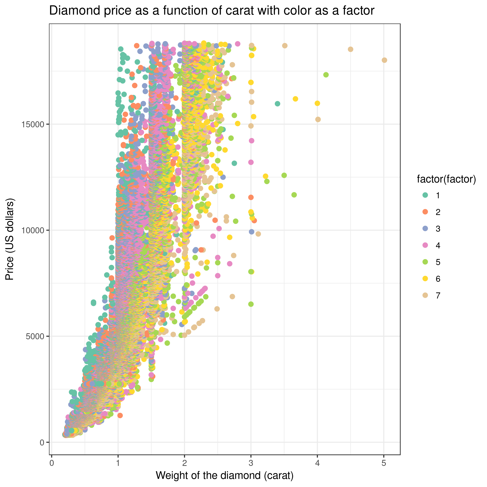

How to reproduce published Galaxy analyses
 Melanie Föll
Melanie Föll Anne Fouilloux
Anne FouillouxOverview
Questions:Objectives:
How to reproduce published Galaxy results (workflows and histories)
Learn how to load published data into Galaxy
Learn how to run a published Galaxy workflow
Learn how histories can be inspected and re-used.
Time estimation: 1 hourLevel: Introductory IntroductorySupporting Materials:Last modification: Aug 10, 2021
 Questions:
Questions:
Introduction
This training will demonstrate how to reproduce analyses performed in the Galaxy framework. Before we start with the hands-on part, we would like to give you some information about Galaxy.
Galaxy is a scientific workflow, data integration and data analysis and publishing platform. Galaxy is an open-source platform for accessible, reproducible, and transparent computational research. While Galaxy was started to allow non-bioinformaticians to analyze DNA sequencing data, it nowadays enables analysis tasks of many different domains including machine learning, ecology, climate science and omics-type of analyses. Galaxy is easy to use because it is accessible via a web-browser and provides a graphical user interface which enables access to pre-installed tools and large computational resources. In Galaxy, all analyses are stored in so-called histories. The history keeps track of all the tools, tool versions and parameters that were used in the analysis. From such a history, a workflow can be extracted; this workflow can be used to easily repeat the analysis on different data. Both, histories and workflows, can either be shared privately with colleagues or publicly, for example as part of a published manuscript.
For more background information about Galaxy, have a look into the Galaxy publication (Afgan et al. 2018). In depth technical details about technologies that enable reproducible analyses within Galaxy are described in Grüning et al. 2018.
Agenda
In this tutorial, we will cover:
What does Galaxy look like?
Many different Galaxy servers exist. Some are public, some are private, some focus on a specific topic and others like the usegalaxy.* servers cover a broad range of tools. To reproduce published results it is highly recommended to use the same Galaxy server that was used in the original study. In the case that this was a private server that is not accessible to you, you might want to use one of the main Galaxy servers: usegalaxy.org, usegalaxy.eu, usegalaxy.org.au. To learn more about the different Galaxy servers visit the slides: options for using Galaxy. The particular Galaxy server that you are using may look slightly different than the one shown in this training. Galaxy instance administrators can choose the exact version of Galaxy they would like to offer and can customize its look to some extent. The basic functionality will be rather similar across instances, so don’t worry! In this training we will use the European Galaxy server on which the original analysis was performed and shared.
hands_on Hands-on: Log in or register
- Open your favorite browser (Chrome/Chromium, Safari or Firefox, but not Internet Explorer/Edge!)
- Browse to the Galaxy Europe instance (recommended) or to a Galaxy instance of your choosing
- Choose Login or Register from the navigation bar at the top of the page
If you have previously registered an account with this particular instance of Galaxy (user accounts are not shared between public servers!), proceed by logging in with your registered public name, or email address, and your password.
If you need to create a new account, click on Register here instead.
The Galaxy interface consists of three main parts:
- The available tools are listed on the left
- Your analysis history is recorded on the right
- The central panel will let you run analyses and view outputs

Create a history and load data into it
Each analysis in Galaxy starts by creating a new analysis history and loading data into it. Galaxy supports a huge variety of data types and data sources. Different ways of bringing data into Galaxy are explained here. To reproduce published results, the data needs to be loaded from the public repository where the authors have deposited the data. This is most often done by importing data via a web link.
hands_on Hands-on: Create history
Make sure you start from an empty analysis history.
Tip: Creating a new history
Click the new-history icon at the top of the history panel.
If the new-history is missing:
- Click on the galaxy-gear icon (History options) on the top of the history panel
- Select the option Create New from the menu
Rename your history to be meaningful and easy to find. For instance, you can choose Reproduction of published Galaxy results as the name of your new history.
Tip: Renaming a history
- Click on Unnamed history (or the current name of the history) (Click to rename history) at the top of your history panel
- Type the new name:
Reproduction of published Galaxy results- Press Enter
comment Background about the dataset
The Iris flower data set, also known as Fisher’s or Anderson’s Iris data set, is a multivariate dataset introduced by the British statistician and biologist Ronald Fisher in his 1936 paper (Fisher 1936). Each row of the table represents an iris flower sample, describing its species and the dimensions in centimeters of its botanical parts, the sepals and petals. You can find more detailed information about this dataset on its dedicated Wikipedia page.
hands_on Hands-on: Data upload
Import Tool: upload1 the file
iris.csvfrom Zenodo or from the data library (ask your instructor)https://zenodo.org/record/1319069/files/iris.csvTip: Importing via links
- Copy the link location
Open the Galaxy Upload Manager (galaxy-upload on the top-right of the tool panel)
- Select Paste/Fetch Data
Paste the link into the text field
Press Start
Close the window
- By default, Galaxy uses the URL as the name, so rename the files with a more useful name.
Rename galaxy-pencil the dataset to
irisTip: Renaming a dataset
- Click on the galaxy-pencil pencil icon for the dataset to edit its attributes
- In the central panel, change the Name field
- Click the Save button
- Check the datatype
- Click on the history item to expand it to get more information.
- The datatype of the iris dataset should be
csv.- Change galaxy-pencil the datatype if it is different than
csv.
- Option 1: Datatypes can be autodetected
- Option 2: Datatypes can be manually set
Tip: Detecting the datatype (file format)
- Click on the galaxy-pencil pencil icon for the dataset to edit its attributes
- In the central panel, click on the galaxy-chart-select-data Datatypes tab on the top
- Click the Detect datatype button to have Galaxy try to autodetect it.
Tip: Changing the datatype
- Click on the galaxy-pencil pencil icon for the dataset to edit its attributes
- In the central panel, click on the galaxy-chart-select-data Datatypes tab on the top
- Select
csv- Click the Save button
Add an
#iristag galaxy-tags to the datasetTip: Adding a tag
- Click on the dataset
- Click on galaxy-tags Edit dataset tags
Add a tag starting with
#Tags starting with
#will be automatically propagated to the outputs of tools using this dataset.- Check that the tag is appearing below the dataset name
Make sure the tag starts with a hash symbol (
#), which will make the tag stick not only to this dataset, but also to any results derived from it. This will help you make sense of your history.
details Working with different types of datasets
Some input datasets might need more specialized treatment than explained here. A few data types contain more than one subfile. These are uploaded via the composite data function, which is a new tab on the right of regular upload. Then at the bottom set “composite type” to your file format. For each subfile a select box will appear with a description next to it, about which subfile has to be selected where. Some workflows require input files as dataset collections, in such cases “Input dataset collection” are shown as input when editing or viewing the workflow in the workflow menu. Collections contain several single dataset of the same type tied together. In case a workflow input requires a collection, you’ll need to build a collection out of your files after uploading them. A specialized training explains how to use collections.
Tip: Creating a dataset collection
- Click on Operations on multiple datasets (check box icon) at the top of the history panel
- Check all the datasets in your history you would like to include
Click For all selected.. and choose Build dataset list
- Enter a name for your collection
- Click Create List to build your collection
- Click on the checkmark icon at the top of your history again
In case you want to run a published Galaxy workflow on your own data, you can find explanations about the options to upload your own data here.


Import and run a Galaxy workflow
Galaxy workflows may be published either directly via the Galaxy server or on public workflow repositories such as WorkflowHub. Thus the workflow may be present in one of the three ways:
- As a .ga file or url link, which needs to be imported into Galaxy
- As a link from a personal Galaxy server account that needs to be added to the own Galaxy account
- as a link that directly starts running the workflow in a specific Galaxy server, which is possible via the WorkflowHub website.
This tutorial follows option 1, but options 2 and 3 are no more difficult
tip How to run workflows via options 2 and 3
This is not part of the training, but information in case you received a workflow of interest via way 2) or 3).
Link from a personal Galaxy: In case you received a link from a personal Galaxy user account
- you need to log into exactly the same Galaxy server from where the workflow link is shared, which should be clear from the start of the link, e.g. “https://usegalaxy.eu/…”
- Click on the link and on the upper right on to the plus symbol (import workflow)
- Continue with Step 2 of the following hands-on box
Link from WorkflowHub: In WorkflowHub there is an option to directly run a workflow.
- Make sure that you prepared your input data on the same server as specified in the run button.
- Click on “Run on usegalaxy.eu”
- select inputs
- “Run workflow”
hands_on Import and run workflow available as .ga file or link
Import the workflow either via url directly from Zenodo or by uploading the .ga file
https://zenodo.org/record/5090049/files/main_workflow.gaTip: Importing a workflow
- Click on Workflow on the top menu bar of Galaxy. You will see a list of all your workflows.
- Click on the upload icon galaxy-upload at the top-right of the screen
- Provide your workflow
- Option 1: Paste the URL of the workflow into the box labelled “Archived Workflow URL”
- Option 2: Upload the workflow file in the box labelled “Archived Workflow File”
- Click the Import workflow button
Start the workflow by clicking on the run symbol on the last column in the workflow overview list
Select the
irisdataset as the input dataset.Run the workflow by clicking on
run workflowquestion Question
How many history items do you have after running the workflow?
solution Solution
12, out of which 4 are shown and 8 hidden (at top of history right ander the history name)
comment Hidden datasets in history
Some workflow outputs might be considered as not very important intermediate results and are thus marked as getting hidden in the analysis history after they turned green. This makes the history easier to navigate through the main results which are visible in the history. Hidden datasets can be made visible individually by clicking on “hidden” on top of the history and then clicking “unhide” for the individual datasets. To unhide many dataset at once, click “operations on multiple datasets” at the top right of the history; then select all hidden datasets that you would like to unhide, then click “For all selected… unhide dataset”.
By starting the workflow all jobs are sent to the Galaxy cluster for analysis. Sometimes it can take a bit until the datasets show up in your history. The jobs are processed one after the other or in parallel if the same input is used for several steps. Grey means waiting to run, yellow means running and green means finished. Red means there was an error.
Tip: Troubleshooting errors
When someting goes wrong in Galaxy, there are a number of things you can do to find out what it was. Error messages can help you figure out whether it was a problem with one of the settings of the tool, or with the input data, or maybe there is a bug in the tool itself and the problem should be reported. Below are the steps you can follow to troubleshoot your Galaxy errors.
- Expand the red history dataset by clicking on it.
- Sometime you can already see an error message here
View the error message by clicking on the bug icon galaxy-bug
- Check the logs. Output (stdout) and error logs (stderr) of the tool are available:
- Expand the history item
- Click on the details icon
- Scroll down to the Job Information section to view the 2 logs:
- Tool Standard Output
- Tool Standard Error
- Submit a bug report! If you are still unsure what the problem is.
- Click on the bug icon galaxy-bug
- Write down any information you think might help solve the problem
- See this FAQ on how to write good bug reports
- Click galaxy-bug Report button
- In the meantime, you can ask for help in the Galaxy Gitter Channel or the GTN Gitter Channel, or you can browse the Galaxy Help Forum to see if others have encountered the same problem before.
comment The tool stays grey
This scenario will likely not happen with this training analysis, but might happen with a real workflow. The tool runs are scheduled on the computing infrastructures according to their consumption of cores and memory. Thus, tools that are assigned lots of cores and/or memory need to wait until an appropriate computing spot is available. Several Galaxy server display the current computational load which gives you an idea how busy it currently is.
Each dataset that turns green can already be inspected even though later datasets are still running. The second part of the training will focus on how to inspect datasets in a history.
Inspecting the analysis history
Each history item represents one file or dataset, except when collections are used. History items are numbered, duplicates are not possible because any type of dataset manipulation will automatically generate a separate dataset in the history. Some tools produce several output files and therefore the number of history items can be larger than the number of steps in a workflow. Dataset names in the analysis history are not relevant for the tool run, therefore they can be adjusted in order to make the history easier to understand. The default name of a history item is composed of the tool name that was run and the history item number(s) of the input file(s), e.g. ‘Unique on data 5’
hands_on Inspect history
Vizualize the two scatter plots by clicking on their eye icons (view data)
Tip: Using the Scratchbook to view multiple datasets
If you would like to view two or more datasets at once, you can use the Scratchbook feature in Galaxy:
- Click on the Scratchbook icon galaxy-scratchbook on the top menu bar.
- You should see a little checkmark on the icon now
- View galaxy-eye a dataset by clicking on the eye icon galaxy-eye to view the output
- You should see the output in a window overlayed over Galaxy
- You can resize this window by dragging the bottom-right corner
- Click outside the file to exit the Scratchbook
- View galaxy-eye a second dataset from your history
- You should now see a second window with the new dataset
- This makes it easier to compare the two outputs
- Repeat this for as many files as you would like to compare
- You can turn off the Scratchbook galaxy-scratchbook by clicking on the icon again
Show all datasets by clicking on
hiddenon top of your history, right below the history nameCompare the
Convert csv to tabularfile with theDatamashfile side by side using the scratchbookTrack how the
Datamashresults where obtained by clicking on theDatamashitem in the history and then on itsiicon (view details). The performed operations can be found in the sectionTool parametersquestion Questions
- What are the different Iris species?
- How many lines has the
Convert csv to tabularfile?- Which column was grouped in during the Datamash operation?
- Which column of the
Remove beginningfile contains sepal length and which petal length?solution Solution
- The 3 different Iris species are:
- setosa
- versicolor
- virginica
151 lines (by clicking on the file one can see the line count under its name)
Column 5 (details of Datamash tool: Group by fields - 5)
- Column 1 and 3 (the dataset was generated by removing the header line from data 2, thus the content of the columns is the same as in data file 2)
If you got the same answers as written in the above solution box, then congratulations! You have imported and fully reproduced the results of a previous analysis.
However, sometimes you may wish to do more, like…
Manipulating the analysis
Maybe you are interested in changing some of the original tool parameters and see how this changes the result. The parameter changes can be either done inside the workflow editor, which makes it easy to change many parameters at once (training on Using Workflow Parameters) or directly in the history. To repeat a single analysis step with new parameters this can be done directly in the Galaxy history with the re-run option.
hands_on Manipulate the analysis steps
Rerun the Scatterplot to plot Sepal length vs. Petal length
Tip: Re-running a tool
- Expand one of the output datasets of the tool (by clicking on it)
- Click re-run galaxy-refresh the tool
This is useful if you want to run the tool again but with slightly different paramters, or if you just want to check which parameter setting you used.
- “Column to plot on x-axis”:
1- “Column to plot on y-axis”:
3
Additional Exercise: Import a published analysis history and explore it
Often not only workflows and raw data are published, but also the full Galaxy histories. These histories can either be inspected via their provided link, or imported in order to enable manipulating them in your own Galaxy account.
hands_on Hands-on: Importing a history
Import Tool: upload1 a published history shared via an EU Server account
https://usegalaxy.eu/u/annefou/h/galaxy101-for-everyone-diamond-datasetTip: Import an history
- Open the link to the shared history
- Click on the new-history Import history button on the top right
- Enter a title for the new history
- Click on Import
The diamonds dataset comes from the well-known ggplot2 package developed by Hadley Wickham and was initially collected from the Diamond Search Engine in 2008.
The original dataset consists of 53940 specimen of diamonds, for which it lists the prices and various properties.
For this training, we have created a simpler dataset from the original, in which only the five columns relating to the price and the so-called 4 Cs (carat, cut, color and clarity) of diamond characteristics have been retained. The same workflow as before was used to re-analysis this second dataset and create the analysis history, which highlights the re-usability of workflows across inputs.
comment The 4 Cs of diamond grading
According to the GIA’s (Gemological Institute of America) diamond grading system
- Carat refers to the weight of the diamond when measured on a scale
- Cut refers to the quality of the cut and can take the grades Fair, Good, Very Good, Premium and Ideal
- Color describes the overall tint, or lack thereof, of the diamond from colorless/white to yellow and is given on a letter scale ranging from D to Z (D being the best, known as colorless).
- Clarity describes the amount and location of naturally occuring “inclusions” found in nearly all diamonds on a scale of eleven grades ranging from Flawless (the ideal situation) to I3 (Included level 3, the worst quality).
{kind=link}
question Questions
- What are the different Cut categories?
- How many lines has the
diamonds.csvfile?- Is the color an important factor for the Diamond price?
solution Solution
- The 5 different Cut categories are:
- Fair
- Good
- Ideal
- Premium
- Very Good
53940 lines (by clicking on the file one can see the line count under its name)
- We can create a new scatter plot and use color as a factor (Advanced, column differentiating the different groups: 3). Then, holding carat weight constant, we see on the scatter plot that color is linked to the price of the diamond. So color also explains a lot of the variance found in price! 
Conclusion
trophy Well done! You have just reproduced your first analysis in Galaxy.
Key points
Galaxy provides an easy way to load published data into a Galaxy history
Galaxy allows to re-run a published Galaxy workflow!
Galaxy provides ways to inspect and re-use Galaxy histories
Galaxy provides an easy way to re-run tasks from histories
Frequently Asked Questions
Have questions about this tutorial? Check out the FAQ page for the Introduction to Galaxy Analyses topic to see if your question is listed there. If not, please ask your question on the GTN Gitter Channel or the Galaxy Help ForumReferences
- Fisher, R. A., 1936 The use of multiple measurements in taxonomic problems. Annals of Eugenics 7: 179–188. 10.1111/j.1469-1809.1936.tb02137.x https://onlinelibrary.wiley.com/doi/abs/10.1111/j.1469-1809.1936.tb02137.x
- Afgan, E., D. Baker, B. Batut, M. van den Beek, D. Bouvier et al., 2018 The Galaxy platform for accessible, reproducible and collaborative biomedical analyses: 2018 update. Nucleic Acids Research 46: W537–W544. 10.1093/nar/gky379
- Grüning, B., J. Chilton, J. Köster, R. Dale, N. Soranzo et al., 2018 Practical Computational Reproducibility in the Life Sciences. Cell Systems 6: 631–635. 10.1016/j.cels.2018.03.014
Feedback
Did you use this material as an instructor? Feel free to give us feedback on how it went.

Citing this Tutorial
- Melanie Föll, Anne Fouilloux, 2021 How to reproduce published Galaxy analyses (Galaxy Training Materials). https://training.galaxyproject.org/training-material/topics/introduction/tutorials/galaxy-reproduce/tutorial.html Online; accessed TODAY
- Batut et al., 2018 Community-Driven Data Analysis Training for Biology Cell Systems 10.1016/j.cels.2018.05.012
details BibTeX
@misc{introduction-galaxy-reproduce, author = "Melanie Föll and Anne Fouilloux", title = "How to reproduce published Galaxy analyses (Galaxy Training Materials)", year = "2021", month = "08", day = "10" url = "\url{https://training.galaxyproject.org/training-material/topics/introduction/tutorials/galaxy-reproduce/tutorial.html}", note = "[Online; accessed TODAY]" } @article{Batut_2018, doi = {10.1016/j.cels.2018.05.012}, url = {https://doi.org/10.1016%2Fj.cels.2018.05.012}, year = 2018, month = {jun}, publisher = {Elsevier {BV}}, volume = {6}, number = {6}, pages = {752--758.e1}, author = {B{\'{e}}r{\'{e}}nice Batut and Saskia Hiltemann and Andrea Bagnacani and Dannon Baker and Vivek Bhardwaj and Clemens Blank and Anthony Bretaudeau and Loraine Brillet-Gu{\'{e}}guen and Martin {\v{C}}ech and John Chilton and Dave Clements and Olivia Doppelt-Azeroual and Anika Erxleben and Mallory Ann Freeberg and Simon Gladman and Youri Hoogstrate and Hans-Rudolf Hotz and Torsten Houwaart and Pratik Jagtap and Delphine Larivi{\`{e}}re and Gildas Le Corguill{\'{e}} and Thomas Manke and Fabien Mareuil and Fidel Ram{\'{\i}}rez and Devon Ryan and Florian Christoph Sigloch and Nicola Soranzo and Joachim Wolff and Pavankumar Videm and Markus Wolfien and Aisanjiang Wubuli and Dilmurat Yusuf and James Taylor and Rolf Backofen and Anton Nekrutenko and Björn Grüning}, title = {Community-Driven Data Analysis Training for Biology}, journal = {Cell Systems} }